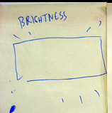

| CODE | ICON | VISUAL & STAGING | VOICE | SOUND | LIGHTS |
| FORM - ELEMENTS | |||||
| BRI Brightness 40 sec |
 |
Joan is in the WINGS. |
Joan starts by breathing. Screen gets brighter. Joan controls brightness. | PC off. | House is black. |
| BAL Balance 30 sec |
Jaap enters the WINGS from offstage. The screen balances to accomodate Jaap's breath.
|
Jaap breathes, and sets the rectangle out of balance rotationally: a lifting force. The universe responds with a rotational restoring force, but it overcompensates and things are now unbalanced the other way, equal and opposite. Jaap attempts to restore balance again. | PC off. | House is black. | |
| CLD Cloud 2 min |
Jaap & Joan in FRONT zone. | Softer and more subtle. Whooshing, Sibilants, Resonant sibilants, non-pitched whistle, vocal fry, creaking, two-lips-in, two-lips-out, sucking air over teeth, phonetic x, whish-whish-whish cheek yanking. The clouds contain the sounds and play them back as smooth loops. | PC ON | house black. | |
| FTW Fade to White 10 sec |
Jaap & Joan exit towards the WINGS. | PC off. | house black. | ||
| RHYTHM - REPETITION | |||||
| BOUNC Bounce |
Jaap enters the SCREEN zone from the WINGS. Joan is offstage. Bouncing on floor of screen |
Jaap: short percussive sounds with a variety of pitches. Aggesssive |
Very little stage monitoring of voice signals and PC! Crosstalk is an issue. PC ON |
house black | |
| BOUNC Bounce |
Bouncing off body |
Very little stage monitoring of voice signals and PC! Crosstalk is an issue. PC ON |
house black | ||
| BOUNC Bounce |
5 different sounds, of different sizes PONG (infinite bouncing) |
Very little stage monitoring of voice signals and PC! Crosstalk is an issue. PC ON |
house black | ||
| BOUNC Bounce |
other diagrams HERE! |
Joan is singing
around the boundary with the object of closing it in. |
Joan deviates from a center pitch (E below 440?). Jaap recycles 5 sounds, and can give them more urgency as the walls close in around. |
Very little stage monitoring of voice signals and PC! Crosstalk is an issue. PC ON |
house black |
| BODY Body Stamp |
Performers in FRONT zone. |
Abstract interjections. Expressive nonspeech exclamations. Unintelligible exhortations. An overall evolution from sparseness to denseness, a seething mob of silhouettes. Jaap & Joan begin with short sounds separated by long silences, establishing long loops with low density. As their sounds recycle, shorter and shorter loops are used, increasing the density. The section ends when J&J leave the stage, with the crowd still cycling for 10-15 seconds. Jaap switches mic configurations. |
PC ON Be careful about PC monitoring onstage -- delayed feedback is possible! |
possibly some dim white lighting from above, at the center of stage. | |
| CHEEK Cheek Synth |
Jaap enter from the WINGS into the SCREEN zone. |
Cheeks. start at low level, catching individual flaps. + Jaap has two omni lavs, one of which is on Joan's frequency. We need some time for Jaap to change mics again. Balls continue to slowly fall, emitting sound when they hit the ground. |
PC ON. In-ear monitoring ONLY!
|
possibly some light at rear of stage, near screen. | |
| LANGUAGE - SPEECH | |||||
| RIPPL Ripple |
Jaap & Joan in SCREEN zone, facing each other: A conversation between two amphibians. This module ends abruptly. On cue, both performers rapidly assume their next roles. Jaap stands up straight and begins to narrate; Joan climbs atop the short pedestal and segues into animal sounds. |
Watery sounds. Joan starts alone (giving Jaap more time to change mics). She begins with spare lip pops or clicks. Jaap enters. Croaking, creaking. Vocal fry. uvular gurgle trill. lip pops. sung (harmonized?) labial lip trills (L-B-L-B-L-B) Swallows, gulps.
Short episode.
|
Monitoring very helpful. PC off. |
Possibly Very dim BLUE light at rear of stage | |
| BUG Nature Show |
Joan in SCREEN zone. Joan crouches on top of black box. Jaap has option to be in SCREEN or FRONT zones (TBD). The subject of our show today is a curious animal called Joan. Here, we observe one in its natural habitat. |
Jaap speaks a mostly (but not exclusively) vowel language; squiggles emerge. Joan alternates cooing with whooshing sibilants.
|
PC off. Monitoring somewhat helpful, but be careful about crosstalk from Jaap to Joan. Joan's graphic is very sensitive! |
Medium spotlight on Jaap in front-left of stage | |
| MELODY - HARMONY | |||||
| FLUID Fluid |
Intimate sounds of relatively short durations, separated by periods of quiet. Soft fricatives & sibilants alternating with vowels. Good sounds: z, sh, zh, f, v, tsch, j; oh, ah; zzzz-ssss, ooo-zzz, tseh, tsoo, tsep, gesh, gazh, low oooo-weee. Jaap: + cheek taps, donald duck vowels. |
PC off. careful about crosstalk between performers. |
BLACK | ||
| RTHKO Rothko |
Audio recording to multitrack, up to 16 bands, spatially divided, add tenergy to drones, deviation from the pitch of the drone. |
PC ON Stage monitoring helpful, but be careful of feedback through the PC recording system. |
BLACK | ||
| STRYP Stripe |
PC off. | BLACK | |||
| PITCH Pitch Paint |
Begins with drones that pick up where the drones from Stripe left off. Pure tones make straight lines whose pitch-properties are not yet apparent to the audience. Singers make straight lines with the goal of reaching the edge of the screen. When their lines reach the edge of the screen, they start new lines. Soon, they introduce lines with one angle -- that is, two notes with one interval, still with the objective of reaching the edge of the screen. Then they introduce 3-note patterns, and the angle behavior becomes more obvious. Finally, they relax and make a variety of shapes and other squiggles, curves and zigzags. |
PC off. | dim white light, diffuse in center of stage. | ||
| END | |||||
| SHSH Shush Fade to Black |
Monitoring weak. PC off. |
FADE to black | |||
| CRED Credits |
SOUND OFF | ||||